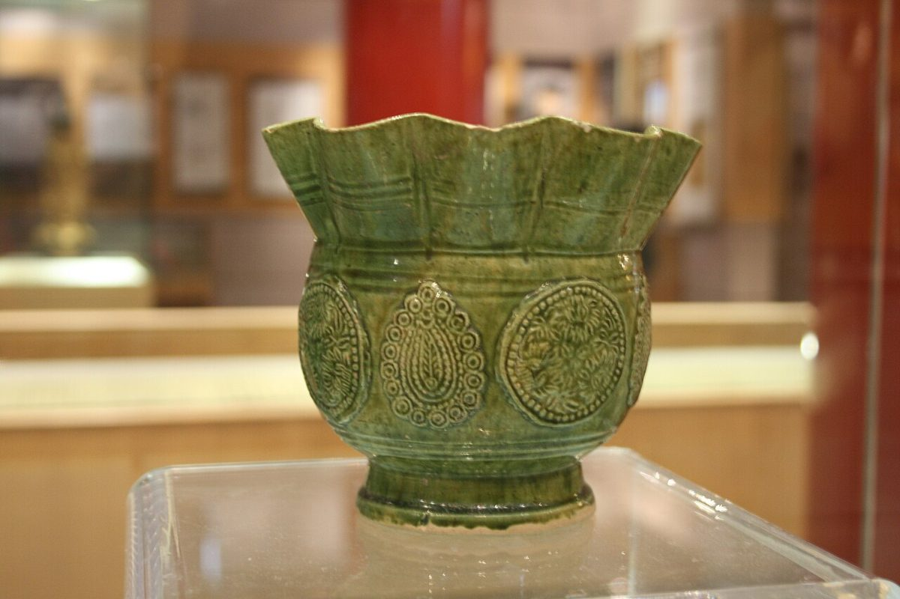

4
店のこと(こうだい)
店のこと
お店について確認できているのは、所在地とInstagramのアカウントだけです。
器を支える、底の輪
このページの「想像してみる」部分は、制作側が想像して書いたものです。お店の実際の様子・考え・メニューとは関係がありません。
確認できていること
- 店名は「うつわとカフェ Lau」、業種はカフェ
- 所在地は大阪府枚方市堤町9-11(〒573-0057)
- 電話番号はなし。連絡はInstagramから
- 営業時間・定休日・メニュー・価格・ご予約・駐車場は準備中

想像してみる
「高台」のように、そっと支えるもの
高台は、器を支える足元の輪です。店名の由来は分かりませんが、制作側は「うつわ」という語から、そんな縁の下の部分まで思い浮かべました。お店の実際の姿とは関係のない、ことば遊びです。
